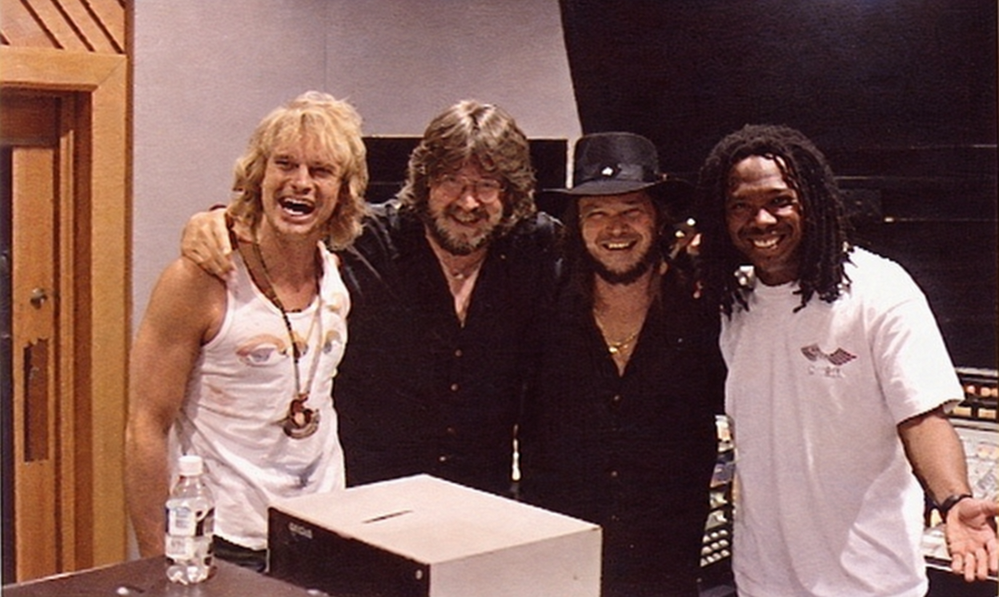

The morning David Lee Roth called our house.

It was seven in the morning. Mom was pouring cereal, Andrew and I were getting ready for school, and Dad still hadn't come home. David Lee Roth called from the limo to explain that he'd kept Dad out all night. Mom was not impressed. She asked if Dad was cowering in the backseat. Dave laughed and said yes. They'd been out at the Gold Club, as I learned years later. Dave called again a few days later to find out if Dad had survived.
Nile Rodgers is on the far right in this photo. Pretty cool!
Le Freak · CHIC
Open in Spotify ↗